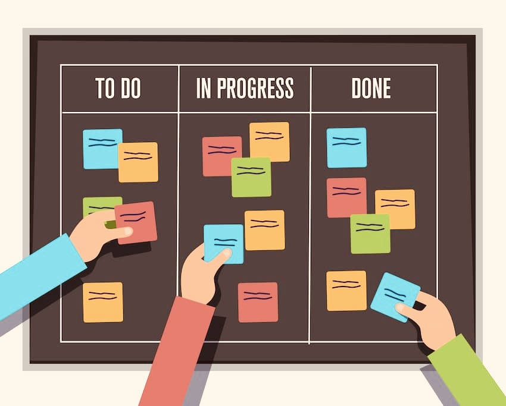

Noter les cours, devoirs, repas, trajets et temps de repos.
Organisation
Un planning clair réduit la pression mentale.
Organiser son temps permet de voir les priorités, éviter les oublis et garder des moments de repos. La méthode Pomodoro aide à démarrer sans attendre la motivation parfaite.
Passer aux contacts
✓
Le temps bien structuré donne plus de calme et de contrôle.
Méthode pratique
Le planning transforme les tâches en étapes réalisables
Tu peux noter les cours, les devoirs, les repas, les trajets et le temps de repos dans un seul planning simple.
Traiter d'abord les tâches importantes, puis les tâches rapides.
25 minutes de concentration, 5 minutes de pause, puis on recommence.